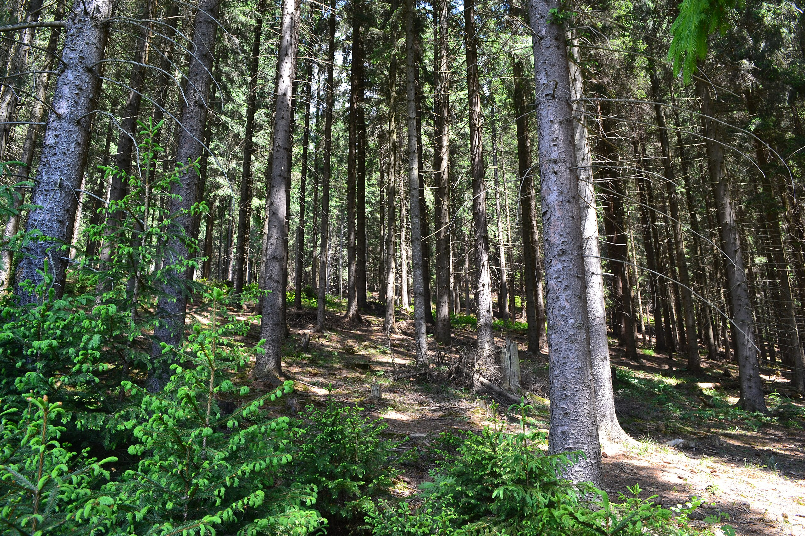

Лісництва Карпат
Карпатські ліси - унікальна екосистема, що займає значну частину західної України. Лісництва відіграють ключову роль у збереженні та відновленні цих природних багатств.
Рахівське лісництво
Одне з найбільших лісництв у Карпатах, що охороняє унікальні букові праліси, занесені до списку ЮНЕСКО.
- Площа: 54,000 га
- Основні породи: бук, ялина, ялиця
- Висота над рівнем моря: 400-2061 м
Ворохтянське лісництво
Розташоване у серці Карпат, відоме своїми віковими смерековими лісами та природоохоронною діяльністю.
- Площа: 32,000 га
- Основні породи: смерека, ялиця
- Висота над рівнем моря: 850-1500 м
Синевирське лісництво
Охороняє території навколо знаменитого озера Синевир, зберігаючи унікальну флору та фауну регіону.
- Площа: 42,000 га
- Основні породи: ялина, бук, явір
- Висота над рівнем моря: 500-1700 м
Природоохоронна діяльність
Лісництва Карпат активно займаються:
- Відновленням лісових масивів
- Захистом рідкісних видів рослин і тварин
- Протидією незаконним вирубкам
- Розвитком екологічного туризму